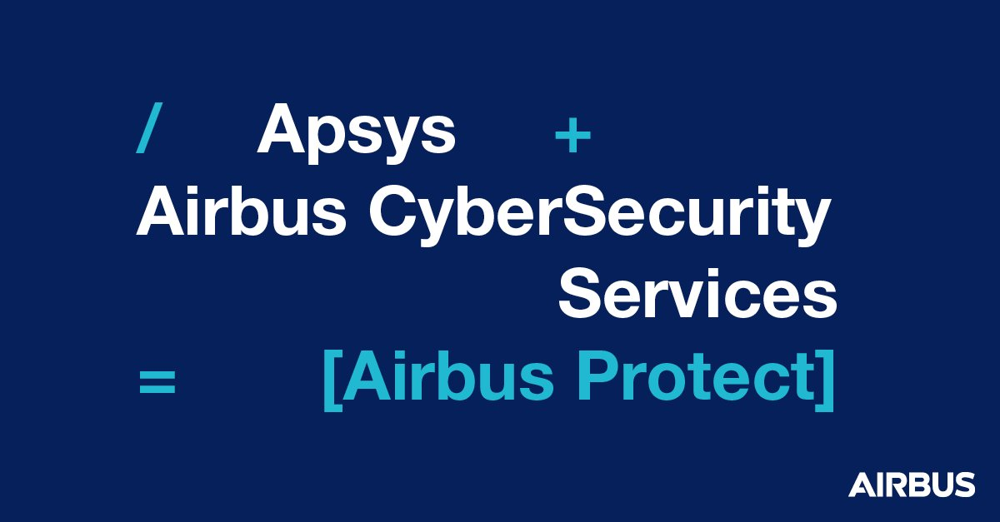
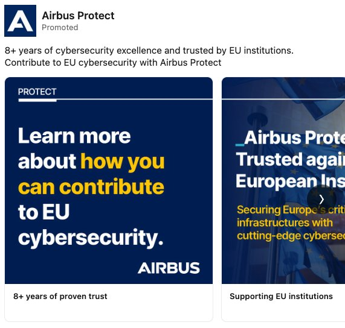

Supporting the European launch with ad campaigns across the UK and France.

Integrated B2B paid media, SEO and social campaign planning and execution for global clients at Red Lorry Yellow Lorry, including supporting the European launch of Airbus Protect with ad campaigns run across the UK and France.
Part of a wider brief devising and implementing brand awareness and lead-gen campaigns — including a LinkedIn ads programme achieving a CTR of 6.51% and establishing a robust series of data points, with resulting leads presented up to C-suite level for sign-off on larger projects.
